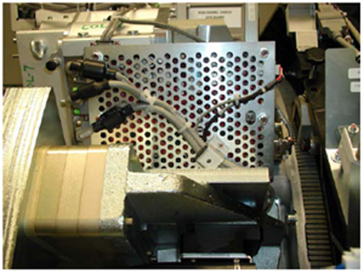
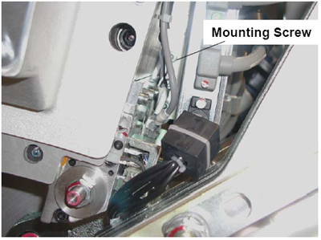

Operating Documentation
Direction 5307452-8EN, Rev# 4
Discovery CT750 HD Service Methods - Adv
Operating Documentation |
| Required Persons | Preliminary Reqs | Procedure | Finalization |
|---|---|---|---|
| 1 | 2 hours | 15 mins |
This document provides the necessary steps to replace and configure the Smart Cathode Onboard Rotation Processor Unit (SCORP) for imaging.
| Last Revised: | 08 September 2008 |
| Item | Qty | Effectivity | Part# | Manufacturer | |
|---|---|---|---|---|---|
| Torque Wrench Set (Must order from the tool depot. The field torque kit does not have the capacity required for the balance weight fasteners.) | 1 | - | 46-268445G1 | - | |
| Deep-well socket ½" drive | 1 | - | Part of Balance Kit | - | |
| 1/2” drive torque wrench | 1 | - | 46-268521G1 or equivalent | - | |
| Item | Qty | Effectivity | Part# | Manufacturer |
|---|---|---|---|---|
| Loctite 242 (Blue) | 1 | - | - | - |
| Dry Wipes or Paper Towel | As required | - | - | - |
| Ty-Raps | As required | - | - | - |
| Item | Qty | Effectivity | Part# | Manufacturer | |
|---|---|---|---|---|---|
| SCORP Module | 1 | - | See IPL | See IPL | |
| POTENTIAL FOR ELECTRIC SHOCK | |
| VOLTAGES MAY BE PRESENT | |
| USE PROPER LOCKOUT/TAGOUT PROCEDURES BEFORE REPLACING COMPONENTS. |
| Follow ALL required safety and PPE procedures customary for your organization, when working on this product. | |
| Condition | Reference | Eff |
|---|---|---|
Recommend procedure completion by GE trained service personnel. | - | - |
Move the table to its home longitudinal position.
Remove right side gantry cover.
Turn OFF the [HVDC ENABLE] , [AXIAL DRIVE ENABLE] , and [120 VAC] switches on Service Switch Panel.
Remove scan window
Remove gantry left side, top, and front covers.
Rotate gantry by hand to gain access to the SCORP module, located between the gantry 107 balance weights and the DAS Detector assembly.
Engage rotational lock.
Remove all cables and connections to the SCORP module as shown in Illustration 1.
Illustration 1: SCORP Cabling

Remove the three detector thermocouple wires
Remove the three M6 SCORP mounting screws from the front of the gantry using a ratchet with a 12” extension and a 5mm hex bit.
Illustration 2: SCORP Mounting Screw

Remove the SCORP module from the gantry.
Remove four M6 countersink screws that connect the mounting bracket to the SCORP module.
Remove mounting bracket from the SCORP module.
Install mounting bracket to new SCORP module with four M6 countersink screws. Apply Loctite 242 to each screw before inserting the screw.
Torque each M6 countersink screw to the following specification.
| 5.8 ft.-lbs | 7.9 N-m | 70 in-lbs | 80.8 kg-cm |
Install new SCORP module on to gantry.
Fasten new SCORP module to the gantry with three M6 mounting screws.
Torque each M6 mounting screw to the following specification
| 5.8 ft.-lbs | 7.9 N-m | 70 in-lbs | 80.8 kg-cm |
Reconnect three detector thermocouple wires.
Reconnect all wire connections to SCORP module. Make sure all cables are secured in their clamps and properly Ty-Rap.
Disengage rotational lock.
Turn ON the [HVDC ENABLE] , [AXIAL DRIVE ENABLE] , and [120 VAC] switches on Service Switch Panel.
Press [ESTOP RESET] on Service Switch Panel and wait until scan hardware is reset.
Turn OFF [HVDC ENABLE] , [AXIAL DRIVE ENABLE] , and [120 VAC] switches on Service Switch Panel.
Install gantry left side, top, and front covers.
Install scan window.
Turn ON [HVDC ENABLE] , [AXIAL DRIVE ENABLE] , and [120 VAC] switches on Service Switch Panel.
Press [ESTOP RESET] on Service Switch Panel and wait until scan hardware is reset.
Install right side gantry cover.